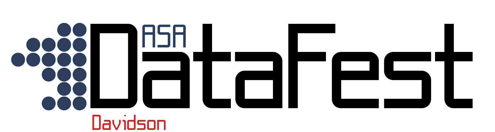
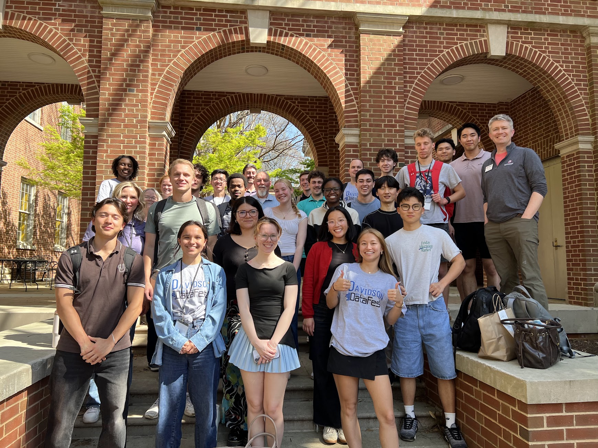

Davidson College
Dr. Andrew O’Geen
Chair (interim)
Dr. Laurie Heyer
Chair (on sabbatical until Fall 2027)
Dr. Kevin Wang
Assistant Professor
Prof. Pete Benbow ’07
Assistant Professor of the Practice
Amber MacIntyre
Departmental Coordinator
The real brains behind the operation
A highly interdisciplinary field that blends mathematics with computer science to extract useful knowledge from data.
Can be used in a variety of fields, including natural sciences, social sciences, and the humanities.
Red = courses taught by DS core faculty
Register today by scanning the QR code or go to go.davidson.edu/datawrangle

Local companies sponsor DataFest and provide mentorship and networking opportunities!

You need to keep the following in mind:
The IDAT minor requires you to take 6 courses from at least 3 different subjects (CSC, MAT, DAT, PHY, BIO, etc.)1
Must apply through the Data Science department website
Taehee Kim ’27
Email datasci@davidson.edu